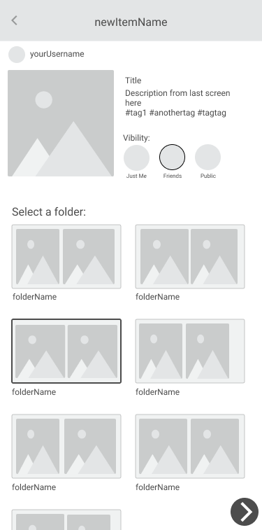
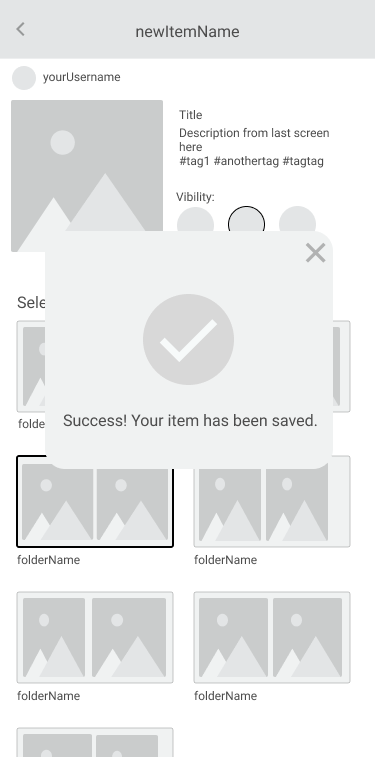
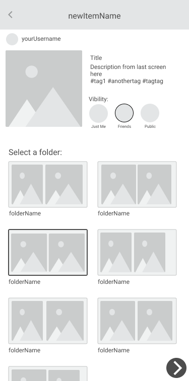
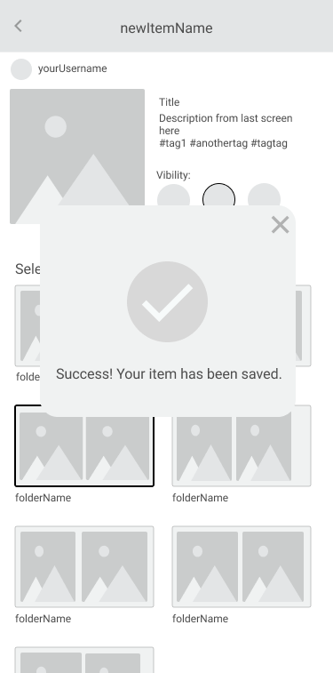
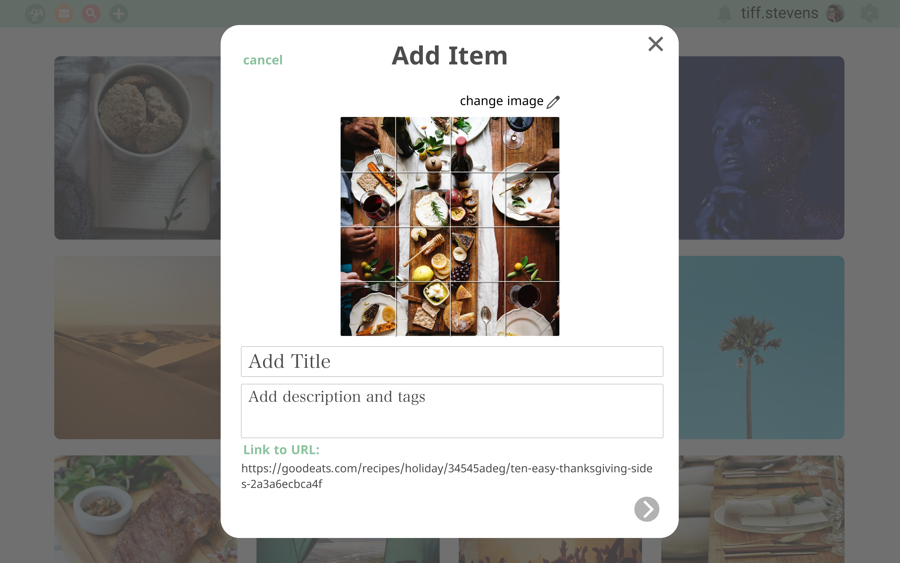

Gather: A social sharing platform that combines the best aspects of Pinterest and Instagram.
Users are able to create or reshare original content with an emphasis on incorporating external links.

The Prompt
Invent, design and brand an app with the following desired features:
- Saving content found on the web (links, images, videos, etc.)
- Organizing that content
- Creating new content
- Uploading files from a personal device
Initial Concept
I wanted to figure out a way to create a platform that would have a unique space in the market. My original idea was to come up with a platform like pinterest, but with a focus on articles and text-based content; something that would take the place of the bookmarks bar in a visual way. Based on that concept, I began my research.
Research
I surveyed 29 participants with a survey I created on Google Forms. When looking at the results, it was clear that people were looking for a social platform with images and videos to explore, while having the flexibility to keep things private, sharing only with their own friends or posting publicly. Though some people were interested in having text-based content such as articles, it wasn't high on their priority list and was not the overall consensus. Due to this, I had to rethink my initial idea to incorporate my findings.
Competitive Analysis
Based on my survey results, I felt I should shift my idea to a social sharing platform, so I researched three companies that do just that: Pocket, Instapaper and Pinterest. For this, I performed a SWOT analysis that produced the following insights:
- Users enjoy visually stimulating content (pictures > words)
- These platforms focus either just on articles or just on photos and videos, neither on both
- Many platforms that tried to focus on text-based content no longer exist, so the concept may not be as great as I'd imagined
User Personas
People can use Gather in different ways, as we see in our User Personas. Here are the various goals that our users have:
- Chris is a creative type who is looking for a source of inspiration without too much clutter. He wants to be able to use Gather to access a larger audience and keep up with trends. He's really looking for a new place to promote his art and connect with creative types.
- Rachel is looking for a space to connect with friends and to inspire new hobbies. She likes to keep things organized and wanted to make sure that things she saves are easy to find later. She's really hoping to use Gather to fully utilize her free time by connecting with friends while scrolling through new ideas.
User Stories
From my research and the created User Personas, I was able to determine the various tasks that were integral for the user, organized by priority level.
High Priority
- Sign up for an account
- Sign into an account
- Upload content
- Save content from the web
- Share one item
- Share a folder of items
Medium Priority
- Delete a saved item
- Find a saved item
- Organize content
- Create new content
Low Priority
- Find new people to follow
- Find new tags to follow
- Comment on items
User Flows
Now that I know the tasks I want to include in my app, I needed to determine how a user can navigate from one to the other. User Flows was a very integral part of Gather, as I wanted to incorporate so many different tasks and screens.

Wireframing
Going from quick sketches, to lo-fi to hi-fi versions, my designs went through a lot of cycles of feedback and designing.
Sketches
LoFi
 



HiFi
Branding: Name, Logo & Color Palette
I wanted to create a place for both people and content to gather, connect and intertwine, which is how the name, “Gather” came to be. The logos and color palette came naturally as soon as I had the brand philosophy in mind.


Prototype Testing
I tested my low and high fidelity prototypes to six users (three for LoFi and three for HiFi), all garnering information that helped me further my designs. Through this User Testing, Preference Testing and Grader Feedback, rounds of changes were made.
- Removing unnecessary text
- Adding more options to share
- Eliminating a search bar on each screen
- Not having the full logo/app name on each screen
- Overall logo design
- Adding a full logo instead of just a simple “g”
- Avoiding the use of coral text and using green, black or grey
Preference Testing
Three preference tests were also conducted to help answer some detailed design questions that naturally arose through the design process.


Iterations
From all the gathered insight and feedback, I was able to go from my initial wireframe sketches to my final hi-fi screens (and prototypes).

The Solution
Our mission was to provide a calming space for productivity and play. Combining aspects of successful apps, within gather, the user will be able to create content on-the-go, save from the web, send, share, chat and organize. The best part? Everyone can use gather in their own way. Whether you want things to be just for you, for friends, everyone or a combination: we’ve got you covered. My solution is Gather: a place for both people and content to gather, connect and intertwine.
Takeaways
- This was the first time I'd ever done full designs and prototypes both for desktop and mobile. I learned to maintain proportional spacing and congruence among both.
- Created a logo from rough sketches to vector files with variations for different spaces and sizes.
- This was my first project that I did from start to finish, implementing all UX steps.
- Not all feedback is as helpful as others, so it’s important to survey and test as many people as possible.